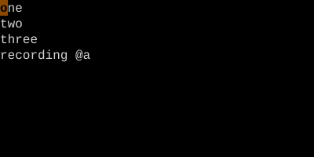
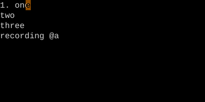
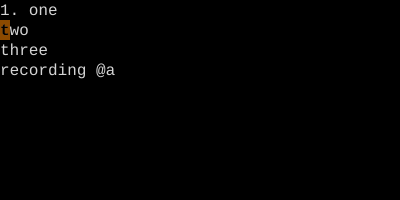
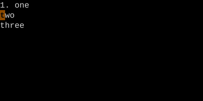
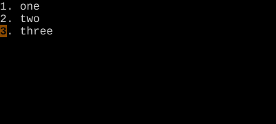

qa starts recording into register a; press q again to stop. @a plays back. @@ replays the most recent macro.
Macros are Vim's loop. Record a sequence of keystrokes once; replay it with one key. They're how you turn 100 lines of repetitive editing into 4 keystrokes.
Start recording into register a
Key
Note
q
a
Stop recording
Key
Note
q
Play macro a
Key
Note
@
a
Repeat last macro
Key
Note
@
@
qa — start recordingq — stop recording@a — play macro@@ — repeat last macro
Worked example — qa ... q then @a
Record once, play forever.
Step 1 · qa · qa — start recording into a.

Step 2 · I1. Esc · Prefix with '1. '.

Step 3 · j0 · Move to next line (recorded).

Step 4 · q · q — stop recording.

Step 5 · @a @a · @a twice — replays on the next two lines.

Macros are just register contents. Open the register, edit it, paste it — they're text.